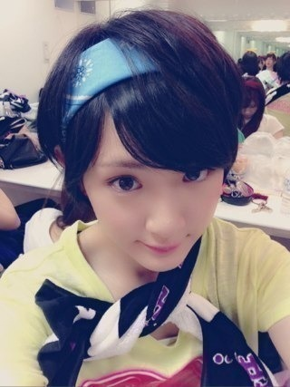

まずは今日は二回回しでした！
一回目は女中6
二回目はなし
でした！
女中6はお稽古でもやっていたから、やりたい役だったので嬉しかったです！ヽ(・∀・)ノ
ただ、今回のプリンシパルは本当に予測不可能！
その分。
面白いのかもしれない。
ただ、二回目回しのライヴ。
私は出れませんでした。
精神が負けてしまいました。
去年のプリンシパルも悩んだな〜
二幕に出れなくて悔しいではなくて、ちょっと、真ん中について考えてしまってね。
みんな、ステージ壊しちゃってごめんなさい。
でもみんなだから大丈夫！
でも今日でやっと復活した！
生駒ちゃん落ちる所まで落ちないと元気になれないんです。
心の風邪。
めんどくさいやつです。
でもそんな私をみんなは優しくつつんでくれます。
スタッフさんも沢山お話聞いてくれて、なんでこんな事で悩んでたんだろうってなりました。
弱い自分に直接ぶつかって、戦える場所。
今日は負けちゃったけど、これからは勝たないと。
今日きてくださった皆さん。
応援してくださっているみなさん。
迷惑、心配掛けてすいませんでした。
ごめんなさい。
でもこんな私でも、私をみて元気になってくれる人がいるって知ったから、頑張ります。
それに演技が出来るようになる！
演技の可能性を広めるのが今回の目標だから頑張らなきゃ！
逃げちゃダメだ逃げちゃダメだ！
いつも支えてもらってるから返さないと。
ありがとうございます。

へばなっ！